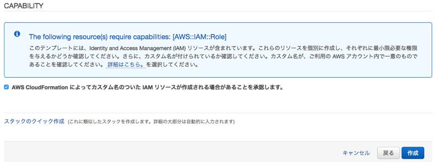
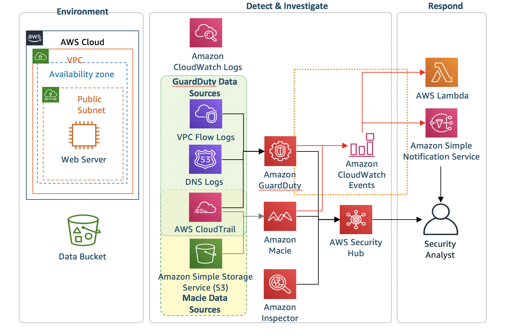

モジュール 2: 攻撃シミュレーション
検知と対応の統制の設定が完了したので、もう 1 つの CloudFormation テンプレートを実行します。このテンプレートは、実際の攻撃をシミュレートします。
アジェンダ
- つ目の CloudFormation テンプレートの実行 – 5 分
- 脅威検知と対応のプレゼンテーション – 25 分
CloudFormation テンプレートのデプロイ
攻撃シミュレーションを開始するには、モジュール 2 の CloudFormation テンプレートを実行する必要があります。
CloudFormation Template実行する前に こちら.もご確認ください
| リージョン | デプロイ |
|---|---|
| US West 2 (Oregon) |  |
-
上の Deploy to AWS (AWS へのデプロイ) ボタンをクリックします。これにより、テンプレートを実行するコンソールに自動的に移動します。
-
スタックの名前は自動的に移入されますが、自由に変更できます。その後、Next (次) をクリックしてからもう一度 Next (次) をクリックします (このページの設定はデフォルトのままにします)。
-
最後に、テンプレートによって IAM ロールが作成されることに同意し、Create (作成) をクリックします。

これによって CloudFormation コンソールに戻ります。ページを更新して、作成を開始するスタックを確認することができます。先に進む前に、スタックが以下に示すように CREATE_COMPLETE ステータスであることを確認します。
脅威検知と対応のプレゼンテーション
以下は、モジュール 2 の CloudFormation スタックが作成された後の設定の図です。

脅威検知と対応のプレゼンテーション
AWS Sponsored Event: クラスルームトレーニングでこのワークショップを行う場合、プレゼンテーションが終わるまで待ってからモジュール 3 を開始してください (攻撃シナリオが完了するように、プレゼンテーションには十分な時間が割り当てられます。)
Individual: クラスルームトレーニング以外でこのワークショップを行う場合は、モジュール 3 に進むことができます。2 つ目の CloudFormation テンプレートが完了してから検出結果の表示が始まるまで、少なくとも 20 分かかることに注意してください。